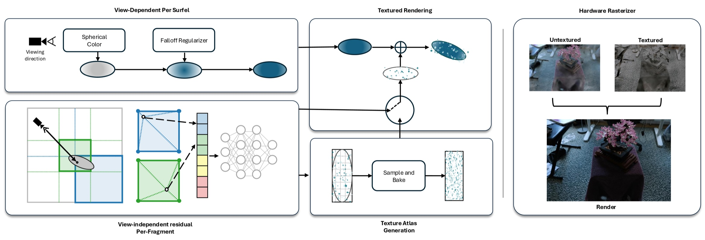
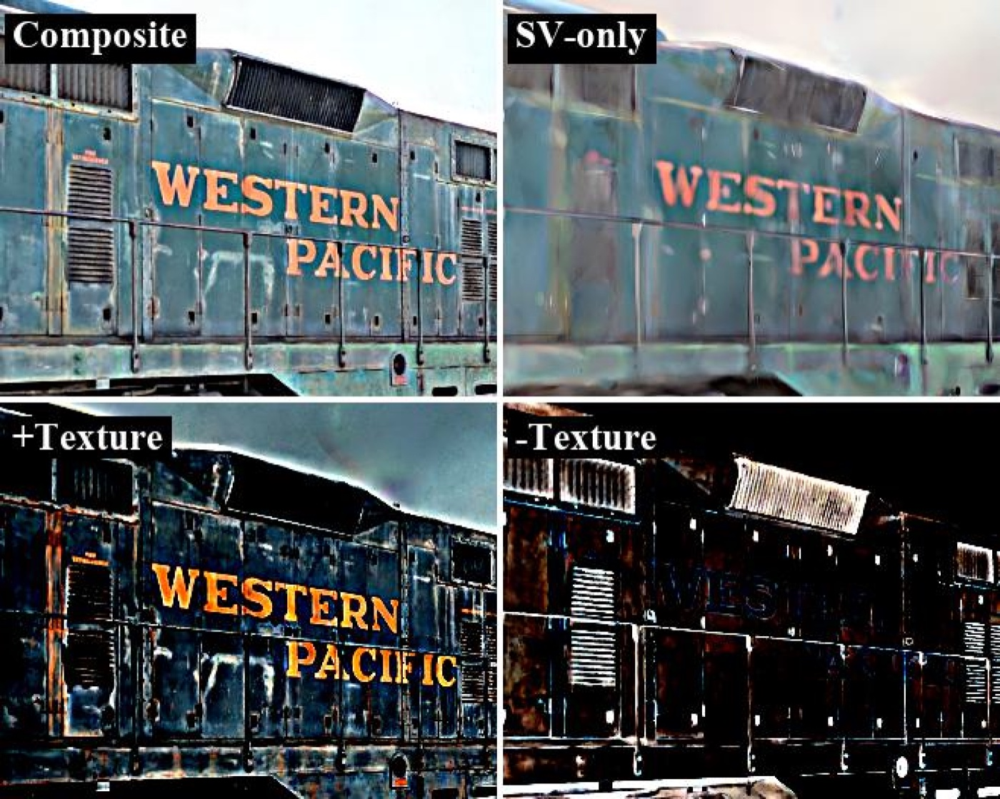
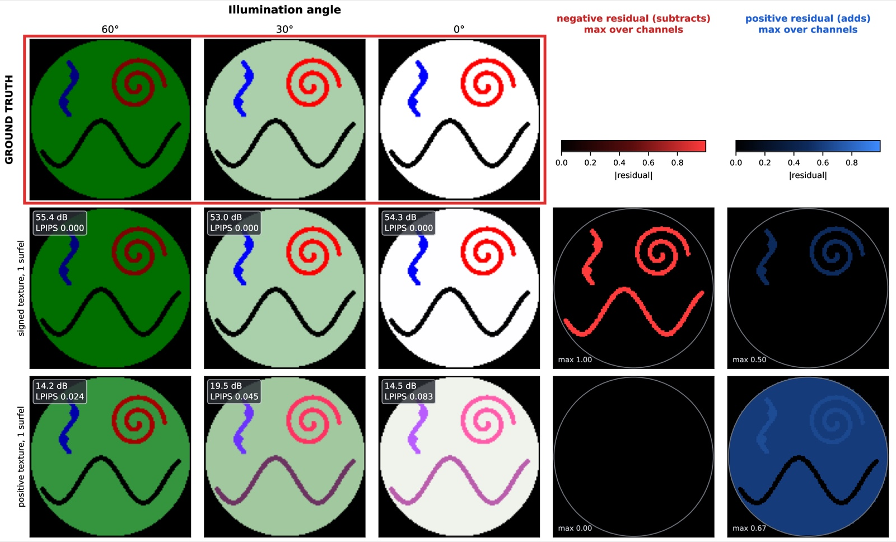

on the GPU hardware rasterizer
with 10× fewer primitives
FastGS and Speedy-Splat
Abstract
Neural radiance representations in Gaussian Splatting (GS) deliver high-fidelity color detail but impose substantial rendering overhead from network evaluations. We present a learned sparse scene representation based on 2D surfels, which enables baking the neural component into a hardware-accelerated 2D texture atlas and eliminates runtime network inference. Our 2D surfels carry low-frequency geometry and view-dependent appearance, while view-independent, per-primitive high-frequency texture is encoded with a spatial hash grid and converted into the texture atlas. A novel sparsity objective that penalizes per-primitive kernel falloffs achieves a substantially sparser representation than prior methods. With a compute-optimized ray-surfel intersection shader our approach renders roughly 7 to 9× faster than 3DGS on common benchmarks, and over an order of magnitude faster on individual scenes, while surpassing the perceptual quality and speed of the fastest sparsification methods (FastGS and Speedy-Splat) at PSNR parity. A quality-optimized variant matches the perceptual quality of the strongest baseline while still rendering several times faster. Because inference is one texture fetch per fragment, frame rates can be pushed to 2,700–4,400 FPS with no loss in quality when using the GPU hardware rasterizer.
Method

- Signed texture residual. The texture can add to or subtract from the surfel's color, so one surfel holds detail that would otherwise need several.
- Falloff regularizer. Beta kernels are pulled toward flat, hard-edged disks, which lowers both the primitive count and overdraw.
- Bake and finetune. The hash grid becomes one compressed texture atlas, and its texels are then finetuned directly, ending above the network they came from.
- Closed-form intersection. The ray–surfel intersection moves out of the pixel loop, which raises the software frame rate by a third at unchanged quality.


Interactive Demos
Our bakes of all 13 benchmark scenes, rendered in your browser. Needs WebGPU (Chrome or Edge 113+, Safari 18+).


Side by side with FastGS and Nexels
Drag the white handles to move the split. Pause, press Crop and drag a box to zoom.
- PSNR
- SSIM
- LPIPS
- FPS
- Points
- PSNR
- SSIM
- LPIPS
- FPS
- Points
- PSNR
- SSIM
- LPIPS
- FPS
- Points
Results
Every method trained and timed by us on one RTX 5090 with its released code; quality from one shared evaluation script. Hover a point for its numbers.
Filled markers use each method's own software renderer. Hollow markers joined by a dashed line are the same model on a GPU hardware rasterizer: ours and Compressed 3DGS on their own, FastGS and Speedy-Splat through our Vulkan port. The shaded area is dominated by the frontier.
Best, second and third per column are tinted. MB is the stored model in each method's own format. HW is the hardware-rasterizer frame rate at quality parity.
Hardware rasterization
Rendering needs only one texture fetch per fragment, so our bakes also run through the GPU's fixed-function pipeline: 1.8× faster than our CUDA renderer on average, at quality parity. The baselines gain less from the same path, 1.4× for FastGS and 1.7× for Speedy-Splat, because sorting millions of primitives dominates their frame. On matched hardware rasterizers we stay 1.7× faster than FastGS and 1.3× faster than Speedy-Splat.
BibTeX
@article{kelkar2026bake,
title = {Bake It Till You Make It: Ultrafast Spatial Texture Atlas Splatting},
author = {Kelkar, Neel and Niedermayr, Simon and Petkov, Kaloian and
Engel, Klaus and Westermann, R{\"u}diger},
journal = {arXiv preprint arXiv:2607.13808},
year = {2026}
}